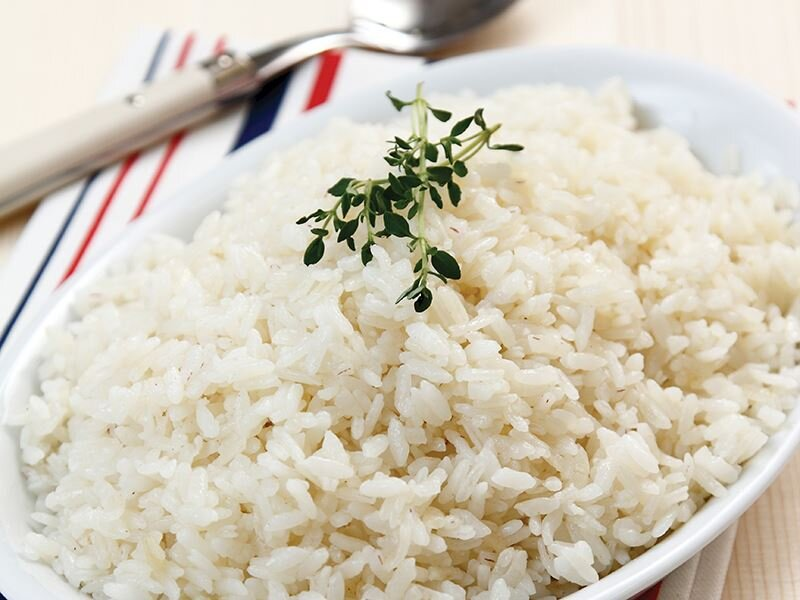

2 Kişilik Sade Pirinç Pilavı Tarifi : Tam Ölçülü
Kaç Kişilik : 2 Kişilik
Kaç Kalori : 283 Kalori

2 Kişilik Pirinç Pilavı Tarifi Nasıl Yapılır?
- Yıkayıp süzdüğünüz pirinci tereyağında kavurun.
- Üzerine 1.5 su bardağı su ve tuz ekleyerek önce yüksek ısıda kaynayıncaya kadar pişirin.
- Kaynadıktan sonra kısık ateşte suyunu çekene kadar pişirin
- Şehriyesiz pirinç pilavını kuru fasulye veya köri soslu tavuk tarifinin yanında servis edebilirsiniz.
Sade Pirinç Pilavı Tarifi İçin Malzemeler
- 1 su bardağı pirinç
- 1.5 su bardağı su
- 20 gr tereyağı
- Tuz